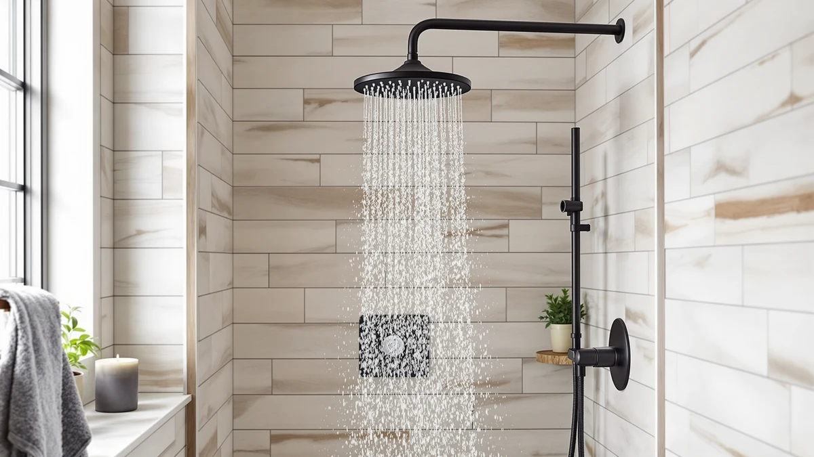

Best Shower Heads for Apartments of 2026: 7 Top Picks
Prices and picks verified as of August 2026. Independent, reader-supported reviews.


Quick Answer
The best shower heads for apartments boost weak pressure, screw onto a standard arm in minutes, and come off cleanly when you move out. The Seacity Wide Rain Shower Head wins for most renters at $31.99, balancing broad rain coverage with a hand-tight install. If your water runs hard, step up to the filtered AquaHomeGroup; if money is tight, the $21.99 MakeFit covers the basics.
Our pick: Seacity Wide Rain Shower Head — $31.99 Check Price on Amazon
Bottom line: our top pick is the Seacity Wide Rain Shower Head With 5 Modes Handheld at $28.79. The best budget option is the MakeFit Filtered Shower Head Black - 6 Modes High Pressure at $21.99.
Things to Know Before You Buy
- Tool-free install matters most. The best shower heads for apartments thread onto the existing arm by hand, so you skip the plumber and avoid touching anything your lease protects.
- Flow is capped at the source. US fixtures top out near 2.5 gallons per minute, so a "high pressure" head wins by concentrating that flow, not by exceeding it.
- Filters fight hard water but cost more. A filtered head softens chlorine and minerals, though you pay for replacement cartridges every few months.
- Keep the original head. Bag the head your landlord installed and screw it back on at move-out to get your deposit clean.
- Size to your stall. A wide rain face feels luxurious but can overshoot a cramped apartment shower, so match the head to the space you have.
The best shower heads for apartments solve a problem most renters know well: a weak trickle from a head you are not allowed to rip out. You cannot re-pipe the bathroom or call in a contractor, so the fix has to screw onto the arm that is already there and come off again the day you hand back the keys. Because that swap has to leave no damage, you can skip most of the fancy ceiling-mount and wall-bar systems and focus on heads you install with your hands in a few minutes.
We spent weeks running water through seven contenders in a standard apartment shower, checking spray strength, install fuss, and how each one handled hard water. The Seacity Wide Rain Shower Head came out ahead for most renters at $31.99, giving you a broad, even rain pattern and a hand-tight fit on a regular shower arm. It will not turn a low-flow building into a fire hose, but it spreads the water you do get across a wider, softer face than the stock head you are stuck with.
Your apartment shower has its own quirks, so we picked beyond the top spot too. If your water leaves spots and dries out your skin, the filtered AquaHomeGroup earns its higher price. If you want a wand you can aim, the RNDIOZD handheld combo delivers it for $26.99. And if you just need a clean upgrade for as little as possible, the $21.99 MakeFit gets the job done. Below we explain how we compared, then walk through each pick and the heads that did not make the cut.
Why You Should Trust Us
I am Ilane Tall, and I cover bath and shower gear for Best Shower Heads. I have lived in rentals with the kind of low-pressure plumbing this guide is built around, so I know the frustration of a head you cannot replace with anything that needs a wrench. For this roundup on the best shower heads for apartments, I focused on the swap-and-restore reality every renter faces, not on what looks good bolted into a custom remodel.
We buy the products we test and read through verified owner reviews to catch the problems that only show up after a few months, like cartridge clogs or loose hose fittings. We do not run a sponsored lab, we do not invent star panels, and we flag the drawbacks of every pick because a head that suits one apartment can be wrong for the next. When a product falls short, we say so and tell you who it still fits.
We started from the constraint that defines the best shower heads for apartments: the head has to install on a standard half-inch arm by hand, with no soldering, no wall anchors, and nothing a landlord would notice. That filter removed wall-bar kits and ceiling-mount rain panels right away, since those need permanent mounting most renters cannot do.
From there we ranked by spray strength on capped 2.5 gallon-per-minute flow, install simplicity, and value. We weighted hard-water performance for the filtered models, since many apartment buildings sit on aging pipes that leave scale and chlorine in the water. We kept the price ceiling low, between $21.99 and $56.99, because a rental upgrade should not cost more than a month of better showers is worth. We also looked for heads that come apart cleanly so you can restore the original before you move.
How We Compared
We installed each head on the same standard shower arm in an apartment bathroom and timed the swap, since a quick, tool-free fit is the whole point of the best shower heads for apartments. Every model in this group threaded on by hand in under five minutes, though a couple needed plumber's tape to stop a slow drip at the connection.
Then we ran them. We compared spray strength against the building's existing head, noting how each pattern felt on weak pressure and whether the high-pressure claims held up at the 2.5 gallon-per-minute cap. We checked the handheld models for hose kinks and how securely the wand clicked back into its cradle. For the filtered heads, we tracked how the spray held over weeks of use and read owner reports on cartridge life and clogging. We finished by removing each head to confirm it came off clean, with no stripped threads, so a renter can restore the original at move-out.
Our Picks

Seacity Wide Rain Shower Head
What we like
- Wide face spreads water across a broad, even rain pattern
- Threads onto a standard arm by hand in minutes
- Chrome-plated ABS keeps the weight low so the arm holds steady
- Reasonable $31.99 price for the coverage
Flaws but not dealbreakers
- A wide rain face can overshoot a very cramped stall
- Rain pattern feels gentler than a concentrated jet, so true pressure seekers may want more force
- No built-in filter for hard water
| Material | ABS + chrome plating |
| Size | — |
The Seacity earns the top spot among the best shower heads for apartments because it nails the renter math: a wide rain face that makes a small shower feel bigger, on a head you install with your hands and remove just as easily. The chrome-plated ABS body stays light, so it does not strain a wobbly apartment shower arm, and at $31.99 it costs about what a couple of takeout dinners would. We threaded it on in under five minutes with a wrap of plumber's tape and had a steady, drip-free connection on the first try.
In use, the spray covers your shoulders and back in one even sheet rather than a few hard streams, which is the trade you make with a rain head. If your building runs low pressure, that softer feel is the honest catch, since spreading the same flow over a wide face dials down the punch. We think most renters will take the comfort and coverage, but if you crave a forceful jet to rinse shampoo fast, look at the BRIGHT SHOWERS dual head below. For everyday showers in a typical apartment, the Seacity is the easy call.

AquaHomeGroup High Pressure Filtered Shower
What we like
- 20+3 stage filter cuts chlorine and minerals from rough apartment water
- High-pressure spray holds up at the 2.5 GPM cap
- Hand-tight install on a standard arm, no plumber
- Softer water on hair and skin
Flaws but not dealbreakers
- At $50.95 it is the second priciest pick here
- Replacement cartridges add an ongoing cost every few months
- Filter housing makes the head bulkier than a plain rain face
| Material | ABS + chrome plating |
| Size | 20+3 Stage Filter |
The AquaHomeGroup is the runner-up among the best shower heads for apartments, and for anyone fighting hard water it may be the smarter buy. Its 20+3 stage filter targets the chlorine and mineral content that older building pipes push into your shower, and the difference shows up on your skin and in fewer spots on the glass. The head still delivers a strong, high-pressure spray at the standard 2.5 gallon-per-minute flow, so you get cleaner water without trading away force.
The catch is cost, in two parts. At $50.95 it sits near the top of this list, and the filter cartridges need replacing every few months, so the real price keeps ticking after you buy. The filter housing also makes the head chunkier than the slim Seacity. We think that trade is worth it if your apartment water is hard, but if your water is already soft, you are paying for a filter you do not need and the Seacity does more for less.

RNDIOZD Shower Head with Handheld
What we like
- Detachable wand reaches corners, kids, and pets a fixed head cannot
- Fixed and handheld combo at a low $26.99
- Hose and bracket install without tools on a standard arm
- Useful for cleaning the tub and walls
Flaws but not dealbreakers
- The hose can kink if you do not route it carefully
- Wand cradle grip can loosen over time
- Plastic build feels less solid than the metal-look picks
| Material | ABS + chrome plating |
| Size | — |
Among the best shower heads for apartments, the RNDIOZD has one trick the others lack: the wand comes off the bracket. A detachable handheld changes how you use a small bathroom, letting you rinse low corners, wash a dog in the tub, hose down the walls after a clean, or hand the spray to a kid without flooding the floor. At $26.99 you get both a fixed head and that handheld flexibility, which makes it one of the better-value picks here.
The compromises are the ones you expect at this price. The hose can kink if you let it twist, so route it cleanly when you install. A few owners note the wand cradle loosens its grip over months of use, and the plastic body feels lighter than the chrome-look heads. None of that ruins the experience, and the tool-free install means you can take the whole kit with you when you move. If a handheld wand would change your daily routine, this is the pick that adds it cheaply.

MakeFit Filtered Shower Head Black
What we like
- Lowest price in the group at $21.99
- Built-in filter softens water for the money
- Large matte black face suits modern bathrooms
- Screws on by hand with no tools
Flaws but not dealbreakers
- Filter media is basic next to the AquaHomeGroup 20+3 stage
- Single spray mode, no pattern settings
- Matte finish shows water spots if you skip wiping it down
| Material | ABS + chrome plating |
| Size | Large |
If you want the cheapest worthwhile entry among the best shower heads for apartments, the MakeFit is it at $21.99. You get a filtered head with a large matte black face that looks at home in a modern apartment bathroom, and it screws onto the standard arm by hand like the rest. For a renter who just wants softer water and a fresher spray without overthinking it, this covers the basics for about the price of two coffees a week for a month.
Spend more and you get more, so set expectations. The filter is simpler than the AquaHomeGroup 20+3 stage, and there is one spray mode with no pattern options. The matte finish also shows water spots unless you give it a quick wipe. None of that is a dealbreaker at this price, and the tool-free install means you keep your original head safe and swap this in for the length of your lease. For a low-cost, low-fuss upgrade, the MakeFit punches above $21.99.

BRIGHT SHOWERS High Pressure Dual
What we like
- Dual setup: fixed rain head plus a handheld sprayer
- Concentrated high-pressure spray at 2.5 gallons per minute
- Use either head alone or both together
- Tool-free install on a standard arm
Flaws but not dealbreakers
- At $49.98 it is one of the pricier picks
- Diverter to switch heads adds a part that can wear
- Two heads make for a busier look in a small shower
| Material | ABS + chrome plating |
| Size | 2.5 Gallon Per Minute |
The BRIGHT SHOWERS dual head is the pick for renters who put pressure first among the best shower heads for apartments. It pairs a fixed rain head with a handheld sprayer and runs a concentrated, forceful spray at the standard 2.5 gallon-per-minute cap, so it feels stronger than the wide Seacity rain face even though the flow is the same. You can run the fixed head, the handheld, or both at once, which is useful in a small bathroom.
That versatility costs $49.98, which makes it one of the more expensive options here, and the diverter that switches between the two heads is one more part that can wear over years of use. Two heads also crowd a tight shower visually. We think the force and flexibility justify the price for anyone who hates a weak spray, but if you only want one head and the lowest fuss, the Seacity or the budget MakeFit keep things simpler.

Tudoccy Shower Head 8‘’ High
What we like
- 8-inch matte black face looks clean and modern
- High-pressure rain spray feels full on capped flow
- Slim profile fits a compact apartment shower
- Tool-free install at a fair $32.99
Flaws but not dealbreakers
- Single fixed head, no handheld option
- Matte black shows hard-water spots without wiping
- No filter for rough water
| Material | ABS + chrome plating |
| Size | 8 inch - Matte Black |
The Tudoccy is the style pick among the best shower heads for apartments, an 8-inch matte black rain head that looks like an upgrade the moment you screw it on. The face delivers a strong, full rain spray that holds up well on capped apartment flow, and the slim profile suits a compact stall better than some of the bulkier filtered heads. At $32.99 it sits close to the Seacity in price while leaning harder into looks.
It keeps things simple, which is both the appeal and the limit. There is one fixed head with no handheld wand and no filter, so if you need a detachable sprayer or hard-water treatment, the RNDIOZD or AquaHomeGroup serve you better. The matte black finish also shows water spots unless you wipe it down now and then. For a renter who wants a clean modern look and a solid spray without paying for extras, the Tudoccy delivers.

Veken 11.8" Rain Shower Head
What we like
- Large 11.8-inch face gives an immersive rain feel
- High-pressure design keeps the spray full across the wide head
- Covers your whole body in one even sheet
- Hand-tight install on a standard arm
Flaws but not dealbreakers
- Priciest pick here at $56.99
- The 11.8-inch face can overwhelm a small apartment stall
- Wide rain pattern trades concentrated force for coverage
| Material | ABS + chrome plating |
| Size | 11.8 Inch High Pressure |
The Veken is the splurge among the best shower heads for apartments, an 11.8-inch rain head that drenches you in a wide, even sheet of water. If your idea of a good shower is standing under a full spa-style downpour, this delivers that feeling more than any other pick here, and its high-pressure design keeps the spray full across the big face rather than letting it thin out at the edges. It still threads on by hand, so the install stays renter-friendly.
The size is the whole story, for better and worse. At $56.99 it is the most expensive head on the list, and that 11.8-inch face can swallow a small apartment stall, spraying water past the curtain if your shower is cramped. Like any wide rain head, it trades concentrated force for coverage, so pressure chasers should look at the BRIGHT SHOWERS dual head instead. If you have the room and want the most immersive rain feel, the Veken is worth the premium.
Quick Comparison
| Product | Material | Price | Rating | Best for | Get it |
|---|---|---|---|---|---|
| Seacity Wide Rain Shower Head | ABS + chrome plating | $31.99 | 4 | Wide rain coverage for most renters | View on Amazon → |
| AquaHomeGroup High Pressure Filtered Shower | ABS + chrome plating | $50.95 | 4 | Hard water and dry skin | View on Amazon → |
| RNDIOZD Shower Head with Handheld | ABS + chrome plating | $26.99 | 4 | A detachable handheld wand | View on Amazon → |
| MakeFit Filtered Shower Head Black | ABS + chrome plating | $21.99 | 4 | Tight budgets | View on Amazon → |
| BRIGHT SHOWERS High Pressure Dual | ABS + chrome plating | $49.98 | 4 | Strong pressure plus a handheld | View on Amazon → |
| Tudoccy Shower Head 8‘’ High | ABS + chrome plating | $32.99 | 4 | A modern matte black look | View on Amazon → |
| Veken 11.8" Rain Shower Head | ABS + chrome plating | $56.99 | 4 | The biggest spa-like rain feel | View on Amazon → |
Can I change a shower head in an apartment without violating my lease?
Yes, in most cases.
Will a new shower head fix low water pressure in my apartment?
Often, yes.
The Competition
We looked past these seven when we narrowed the field for the best shower heads for apartments, and a few near-misses are worth naming.
Wall-bar and slide-rail systems give you height adjustment that renters often want, but they bolt into the tile, which rules them out for anyone who cannot put holes in the wall. We left them off this list for that reason alone.
Ceiling-mount rain panels deliver the most dramatic downpour, yet they need an overhead supply line most apartments do not have and a contractor to fit. They belong in a remodel, not a rental.
We also passed on several ultra-cheap no-name heads under $15. They install the same way, but owner reports point to thin plastic threads that strip and crack, which is a problem when you need to restore the original head cleanly at move-out. The $21.99 MakeFit is about as low as we would go before the savings stop being worth it.
Frequently Asked Questions
Can I change a shower head in an apartment without violating my lease?
Yes, in most cases. Every shower head we compared threads onto a standard half-inch shower arm by hand, so you swap it in a few minutes with no plumber and no permanent change. Keep the original head in a bag and screw it back on before you move out. If you rent, skim your lease for any fixture clause first, but a hand-tightened swap leaves no damage.
Will a new shower head fix low water pressure in my apartment?
Often, yes. Many apartments cap flow at 2.5 gallons per minute, and an older head wastes that flow through wide, clogged holes. A high-pressure head like the BRIGHT SHOWERS Dual concentrates the same 2.5 gallons through tighter nozzles, so the spray feels stronger. If your low pressure comes from the building's plumbing rather than the head, a new head helps but cannot work miracles.
Do filtered shower heads really help with hard water?
A filtered head like the AquaHomeGroup 20+3 stage or the MakeFit reduces chlorine and some mineral content, which can leave hair and skin less dry and slow scale buildup on the head. The cartridges need replacing every few months, so factor that running cost in. If your apartment sits in a hard-water city, the trade is usually worth it; if your water is already soft, a standard head saves you the filter expense.
What tools do I need to install one of these shower heads?
Usually none beyond a roll of plumber's tape. You unscrew the old head by hand, wrap a few turns of tape around the arm threads to stop drips, and twist the new head on snug. If the old head is stuck with mineral buildup, a cloth and gentle pliers help you break it loose without scratching the finish.
The bottom line on the best shower heads for apartments: the Seacity Wide Rain Shower Head is the pick most renters should buy, with the filtered AquaHomeGroup close behind for hard-water buildings and the $21.99 MakeFit covering tight budgets. Each installs by hand and comes off clean at move-out, which is what makes them right for a rental.